Last updated: 2025-07-09
Checks: 7 0
Knit directory: phasing_clean/
This reproducible R Markdown analysis was created with workflowr (version 1.7.1). The Checks tab describes the reproducibility checks that were applied when the results were created. The Past versions tab lists the development history.
Great! Since the R Markdown file has been committed to the Git repository, you know the exact version of the code that produced these results.
Great job! The global environment was empty. Objects defined in the global environment can affect the analysis in your R Markdown file in unknown ways. For reproduciblity it’s best to always run the code in an empty environment.
The command set.seed(20240501) was run prior to running
the code in the R Markdown file. Setting a seed ensures that any results
that rely on randomness, e.g. subsampling or permutations, are
reproducible.
Great job! Recording the operating system, R version, and package versions is critical for reproducibility.
Nice! There were no cached chunks for this analysis, so you can be confident that you successfully produced the results during this run.
Great job! Using relative paths to the files within your workflowr project makes it easier to run your code on other machines.
Great! You are using Git for version control. Tracking code development and connecting the code version to the results is critical for reproducibility.
The results in this page were generated with repository version 6d01293. See the Past versions tab to see a history of the changes made to the R Markdown and HTML files.
Note that you need to be careful to ensure that all relevant files for
the analysis have been committed to Git prior to generating the results
(you can use wflow_publish or
wflow_git_commit). workflowr only checks the R Markdown
file, but you know if there are other scripts or data files that it
depends on. Below is the status of the Git repository when the results
were generated:
Ignored files:
Ignored: .Rhistory
Ignored: .Rproj.user/
Ignored: .ipynb_checkpoints/
Ignored: data/1kgp/chr1/
Ignored: data/1kgp/chr10/
Ignored: data/1kgp/chr11/
Ignored: data/1kgp/chr12/
Ignored: data/1kgp/chr13/
Ignored: data/1kgp/chr14/
Ignored: data/1kgp/chr15/
Ignored: data/1kgp/chr16/
Ignored: data/1kgp/chr17/
Ignored: data/1kgp/chr18/
Ignored: data/1kgp/chr19/
Ignored: data/1kgp/chr2/
Ignored: data/1kgp/chr20/
Ignored: data/1kgp/chr21/
Ignored: data/1kgp/chr22/
Ignored: data/1kgp/chr3/
Ignored: data/1kgp/chr4/
Ignored: data/1kgp/chr5/
Ignored: data/1kgp/chr6/
Ignored: data/1kgp/chr7/
Ignored: data/1kgp/chr8/
Ignored: data/1kgp/chr9/
Ignored: data/1kgp/exclude_samples/
Ignored: data/chr1.1kb.sorted.bed
Ignored: data/chr1.fasta
Ignored: data/chr1.fasta.fai
Ignored: data/chr1.sizes
Ignored: data/chr10.1kb.sorted.bed
Ignored: data/chr10.fasta
Ignored: data/chr10.fasta.fai
Ignored: data/chr10.sizes
Ignored: data/chr10_10k.bed
Ignored: data/chr10_gc1kb.bed
Ignored: data/chr10_gc1kb_noMask.bed
Ignored: data/chr10_gc1kb_pilot.bed
Ignored: data/chr10_mask.fasta
Ignored: data/chr10_mask.fasta.fai
Ignored: data/chr11.1kb.sorted.bed
Ignored: data/chr11.fasta
Ignored: data/chr11.fasta.fai
Ignored: data/chr11.sizes
Ignored: data/chr11_10k.bed
Ignored: data/chr11_gc1kb.bed
Ignored: data/chr11_gc1kb_noMask.bed
Ignored: data/chr11_gc1kb_pilot.bed
Ignored: data/chr11_mask.fasta
Ignored: data/chr11_mask.fasta.fai
Ignored: data/chr12.1kb.sorted.bed
Ignored: data/chr12.fasta
Ignored: data/chr12.fasta.fai
Ignored: data/chr12.sizes
Ignored: data/chr12_10k.bed
Ignored: data/chr12_gc1kb.bed
Ignored: data/chr12_gc1kb_noMask.bed
Ignored: data/chr12_gc1kb_pilot.bed
Ignored: data/chr12_mask.fasta
Ignored: data/chr12_mask.fasta.fai
Ignored: data/chr13.1kb.sorted.bed
Ignored: data/chr13.fasta
Ignored: data/chr13.fasta.fai
Ignored: data/chr13.sizes
Ignored: data/chr13_10k.bed
Ignored: data/chr13_gc1kb.bed
Ignored: data/chr13_gc1kb_noMask.bed
Ignored: data/chr13_gc1kb_pilot.bed
Ignored: data/chr13_mask.fasta
Ignored: data/chr13_mask.fasta.fai
Ignored: data/chr14.1kb.sorted.bed
Ignored: data/chr14.fasta
Ignored: data/chr14.fasta.fai
Ignored: data/chr14.sizes
Ignored: data/chr14_10k.bed
Ignored: data/chr14_gc1kb.bed
Ignored: data/chr14_gc1kb_noMask.bed
Ignored: data/chr14_gc1kb_pilot.bed
Ignored: data/chr14_mask.fasta
Ignored: data/chr14_mask.fasta.fai
Ignored: data/chr15.1kb.sorted.bed
Ignored: data/chr15.fasta
Ignored: data/chr15.fasta.fai
Ignored: data/chr15.sizes
Ignored: data/chr15_10k.bed
Ignored: data/chr15_gc1kb.bed
Ignored: data/chr15_gc1kb_noMask.bed
Ignored: data/chr15_gc1kb_pilot.bed
Ignored: data/chr15_mask.fasta
Ignored: data/chr15_mask.fasta.fai
Ignored: data/chr16.1kb.sorted.bed
Ignored: data/chr16.fasta
Ignored: data/chr16.fasta.fai
Ignored: data/chr16.sizes
Ignored: data/chr16_10k.bed
Ignored: data/chr16_gc1kb.bed
Ignored: data/chr16_gc1kb_noMask.bed
Ignored: data/chr16_gc1kb_pilot.bed
Ignored: data/chr16_mask.fasta
Ignored: data/chr16_mask.fasta.fai
Ignored: data/chr17.1kb.sorted.bed
Ignored: data/chr17.fasta
Ignored: data/chr17.fasta.fai
Ignored: data/chr17.sizes
Ignored: data/chr17_10k.bed
Ignored: data/chr17_gc1kb.bed
Ignored: data/chr17_gc1kb_noMask.bed
Ignored: data/chr17_gc1kb_pilot.bed
Ignored: data/chr17_mask.fasta
Ignored: data/chr17_mask.fasta.fai
Ignored: data/chr18.1kb.sorted.bed
Ignored: data/chr18.fasta
Ignored: data/chr18.fasta.fai
Ignored: data/chr18.sizes
Ignored: data/chr18_10k.bed
Ignored: data/chr18_gc1kb.bed
Ignored: data/chr18_gc1kb_noMask.bed
Ignored: data/chr18_gc1kb_pilot.bed
Ignored: data/chr18_mask.fasta
Ignored: data/chr18_mask.fasta.fai
Ignored: data/chr19.1kb.sorted.bed
Ignored: data/chr19.fasta
Ignored: data/chr19.fasta.fai
Ignored: data/chr19.sizes
Ignored: data/chr19_10k.bed
Ignored: data/chr19_gc1kb.bed
Ignored: data/chr19_gc1kb_noMask.bed
Ignored: data/chr19_gc1kb_pilot.bed
Ignored: data/chr19_mask.fasta
Ignored: data/chr19_mask.fasta.fai
Ignored: data/chr1_10k.bed
Ignored: data/chr1_gc1kb.bed
Ignored: data/chr1_gc1kb_noMask.bed
Ignored: data/chr1_gc1kb_pilot.bed
Ignored: data/chr1_mask.fasta
Ignored: data/chr1_mask.fasta.fai
Ignored: data/chr2.1kb.sorted.bed
Ignored: data/chr2.fasta
Ignored: data/chr2.fasta.fai
Ignored: data/chr2.sizes
Ignored: data/chr20.1kb.sorted.bed
Ignored: data/chr20.fasta
Ignored: data/chr20.fasta.fai
Ignored: data/chr20.sizes
Ignored: data/chr20_10k.bed
Ignored: data/chr20_gc1kb.bed
Ignored: data/chr20_gc1kb_noMask.bed
Ignored: data/chr20_gc1kb_pilot.bed
Ignored: data/chr20_mask.fasta
Ignored: data/chr20_mask.fasta.fai
Ignored: data/chr21.1kb.sorted.bed
Ignored: data/chr21.fasta
Ignored: data/chr21.fasta.fai
Ignored: data/chr21.sizes
Ignored: data/chr21_10k.bed
Ignored: data/chr21_gc1kb.bed
Ignored: data/chr21_gc1kb_noMask.bed
Ignored: data/chr21_gc1kb_pilot.bed
Ignored: data/chr21_mask.fasta
Ignored: data/chr21_mask.fasta.fai
Ignored: data/chr22.1kb.sorted.bed
Ignored: data/chr22.fasta
Ignored: data/chr22.fasta.fai
Ignored: data/chr22.sizes
Ignored: data/chr22_10k.bed
Ignored: data/chr22_gc1kb.bed
Ignored: data/chr22_gc1kb_noMask.bed
Ignored: data/chr22_gc1kb_pilot.bed
Ignored: data/chr22_mask.fasta
Ignored: data/chr22_mask.fasta.fai
Ignored: data/chr22_mask.fasta.fxi
Ignored: data/chr2_10k.bed
Ignored: data/chr2_gc1kb.bed
Ignored: data/chr2_gc1kb_noMask.bed
Ignored: data/chr2_gc1kb_pilot.bed
Ignored: data/chr2_mask.fasta
Ignored: data/chr2_mask.fasta.fai
Ignored: data/chr3.1kb.sorted.bed
Ignored: data/chr3.fasta
Ignored: data/chr3.fasta.fai
Ignored: data/chr3.sizes
Ignored: data/chr3_10k.bed
Ignored: data/chr3_gc1kb.bed
Ignored: data/chr3_gc1kb_noMask.bed
Ignored: data/chr3_gc1kb_pilot.bed
Ignored: data/chr3_mask.fasta
Ignored: data/chr3_mask.fasta.fai
Ignored: data/chr4.1kb.sorted.bed
Ignored: data/chr4.fasta
Ignored: data/chr4.fasta.fai
Ignored: data/chr4.sizes
Ignored: data/chr4_10k.bed
Ignored: data/chr4_gc1kb.bed
Ignored: data/chr4_gc1kb_noMask.bed
Ignored: data/chr4_gc1kb_pilot.bed
Ignored: data/chr4_mask.fasta
Ignored: data/chr4_mask.fasta.fai
Ignored: data/chr5.1kb.sorted.bed
Ignored: data/chr5.fasta
Ignored: data/chr5.fasta.fai
Ignored: data/chr5.sizes
Ignored: data/chr5_10k.bed
Ignored: data/chr5_gc1kb.bed
Ignored: data/chr5_gc1kb_noMask.bed
Ignored: data/chr5_gc1kb_pilot.bed
Ignored: data/chr5_mask.fasta
Ignored: data/chr5_mask.fasta.fai
Ignored: data/chr6.1kb.sorted.bed
Ignored: data/chr6.fasta
Ignored: data/chr6.fasta.fai
Ignored: data/chr6.sizes
Ignored: data/chr6_10k.bed
Ignored: data/chr6_gc1kb.bed
Ignored: data/chr6_gc1kb_noMask.bed
Ignored: data/chr6_gc1kb_pilot.bed
Ignored: data/chr6_mask.fasta
Ignored: data/chr6_mask.fasta.fai
Ignored: data/chr7.1kb.sorted.bed
Ignored: data/chr7.fasta
Ignored: data/chr7.fasta.fai
Ignored: data/chr7.sizes
Ignored: data/chr7_10k.bed
Ignored: data/chr7_gc1kb.bed
Ignored: data/chr7_gc1kb_noMask.bed
Ignored: data/chr7_gc1kb_pilot.bed
Ignored: data/chr7_mask.fasta
Ignored: data/chr7_mask.fasta.fai
Ignored: data/chr8.1kb.sorted.bed
Ignored: data/chr8.fasta
Ignored: data/chr8.fasta.fai
Ignored: data/chr8.sizes
Ignored: data/chr8_10k.bed
Ignored: data/chr8_gc1kb.bed
Ignored: data/chr8_gc1kb_noMask.bed
Ignored: data/chr8_gc1kb_pilot.bed
Ignored: data/chr8_mask.fasta
Ignored: data/chr8_mask.fasta.fai
Ignored: data/chr9.1kb.sorted.bed
Ignored: data/chr9.fasta
Ignored: data/chr9.fasta.fai
Ignored: data/chr9.sizes
Ignored: data/chr9_10k.bed
Ignored: data/chr9_gc1kb.bed
Ignored: data/chr9_gc1kb_noMask.bed
Ignored: data/chr9_gc1kb_pilot.bed
Ignored: data/chr9_mask.fasta
Ignored: data/chr9_mask.fasta.fai
Ignored: data/chrX.1kb.sorted.bed
Ignored: data/chrX.fasta
Ignored: data/chrX.fasta.fai
Ignored: data/chrX.sizes
Ignored: data/chrX_gc1kb.bed
Ignored: data/chrX_gc1kb_pilot.bed
Ignored: data/chrX_mask.fasta
Ignored: data/chrX_mask.fasta.fai
Ignored: data/decode/
Ignored: data/hg38.chrom.sizes
Ignored: data/mask_pilot_10_fasta.bed
Ignored: data/mask_pilot_11_fasta.bed
Ignored: data/mask_pilot_12_fasta.bed
Ignored: data/mask_pilot_13_fasta.bed
Ignored: data/mask_pilot_14_fasta.bed
Ignored: data/mask_pilot_15_fasta.bed
Ignored: data/mask_pilot_16_fasta.bed
Ignored: data/mask_pilot_17_fasta.bed
Ignored: data/mask_pilot_18_fasta.bed
Ignored: data/mask_pilot_19_fasta.bed
Ignored: data/mask_pilot_1_fasta.bed
Ignored: data/mask_pilot_20_fasta.bed
Ignored: data/mask_pilot_21_fasta.bed
Ignored: data/mask_pilot_22_fasta.bed
Ignored: data/mask_pilot_2_fasta.bed
Ignored: data/mask_pilot_3_fasta.bed
Ignored: data/mask_pilot_4_fasta.bed
Ignored: data/mask_pilot_5_fasta.bed
Ignored: data/mask_pilot_6_fasta.bed
Ignored: data/mask_pilot_7_fasta.bed
Ignored: data/mask_pilot_8_fasta.bed
Ignored: data/mask_pilot_9_fasta.bed
Ignored: data/ref_GRCh38.fna
Ignored: data/ref_GRCh38.fna.fai
Ignored: data/ref_GRCh38.fna.in
Ignored: data/ref_maps/
Ignored: output/alt_ref/
Ignored: output/slurm/
Ignored: output/switch_errors/
Ignored: output/trio_phase_1/
Ignored: output/trio_phase_10/
Ignored: output/trio_phase_11/
Ignored: output/trio_phase_12/
Ignored: output/trio_phase_13/
Ignored: output/trio_phase_14/
Ignored: output/trio_phase_15/
Ignored: output/trio_phase_16/
Ignored: output/trio_phase_17/
Ignored: output/trio_phase_18/
Ignored: output/trio_phase_19/
Ignored: output/trio_phase_2/
Ignored: output/trio_phase_20/
Ignored: output/trio_phase_21/
Ignored: output/trio_phase_22/
Ignored: output/trio_phase_3/
Ignored: output/trio_phase_4/
Ignored: output/trio_phase_5/
Ignored: output/trio_phase_6/
Ignored: output/trio_phase_7/
Ignored: output/trio_phase_8/
Ignored: output/trio_phase_9/
Ignored: output/vote_1/
Ignored: output/vote_10/
Ignored: output/vote_11/
Ignored: output/vote_12/
Ignored: output/vote_13/
Ignored: output/vote_14/
Ignored: output/vote_15/
Ignored: output/vote_16/
Ignored: output/vote_17/
Ignored: output/vote_18/
Ignored: output/vote_19/
Ignored: output/vote_2/
Ignored: output/vote_20/
Ignored: output/vote_21/
Ignored: output/vote_22/
Ignored: output/vote_3/
Ignored: output/vote_4/
Ignored: output/vote_5/
Ignored: output/vote_6/
Ignored: output/vote_7/
Ignored: output/vote_8/
Ignored: output/vote_9/
Ignored: output/vote_x/
Ignored: scratch/
Note that any generated files, e.g. HTML, png, CSS, etc., are not included in this status report because it is ok for generated content to have uncommitted changes.
These are the previous versions of the repository in which changes were
made to the R Markdown (analysis/trio_rephase_noTH.Rmd) and
HTML (docs/trio_rephase_noTH.html) files. If you’ve
configured a remote Git repository (see ?wflow_git_remote),
click on the hyperlinks in the table below to view the files as they
were in that past version.
| File | Version | Author | Date | Message |
|---|---|---|---|---|
| Rmd | 6d01293 | theandyb | 2025-07-09 | update |
library(tidyverse)
library(conflicted)
library(janitor)
library(gtsummary)
conflicted::conflict_prefer("select", "dplyr")
conflict_prefer("filter","dplyr")Here in this document we will explore basic summary statistics regarding the errors observed when rephasing the probands from 602 1kGP trio sequences. In particular, we will focus on the results when we omit sites in the genome where the trio is triple-heterozygous, i.e. the locations where the child’s phasing cannot be directly inferred from the parent’s genotype.
df_subj <- read_csv("data/1kgp/subject_info.csv", show_col_types = F)
ped_df <- read_table("data/1kgp/1kGP.3202_samples.pedigree_info.txt", show_col_types = F)
child_ids <- ped_df %>% filter(fatherID != "0" & motherID != "0") %>% pull(sampleID)
unrel_ids <- scan("data/1kgp/unrelated_subjects.txt", what = character())
df_subj_rel <- df_subj %>%
filter(SAMPLE_NAME %in% child_ids)
df_subj_rel$id2 <- 1:602
df_subj_unrel <- df_subj %>%
filter(SAMPLE_NAME %in% unrel_ids)df_errors <- read_csv("output/all_noTH.csv", show_col_types = F)df_errors %>%
mutate(beagle = (n_flip_b + n_switch_b) / n_het,
eagle = (n_flip_e + n_switch_e) / n_het,
shapeit = (n_flip_s + n_switch_s) / n_het) %>%
select(chrom, sample, beagle, eagle, shapeit) %>%
pivot_longer(beagle:shapeit, names_to = "method", values_to = "err_rate") %>%
ggplot(aes(x = chrom, y = err_rate, colour = method, group = sample)) +
geom_point()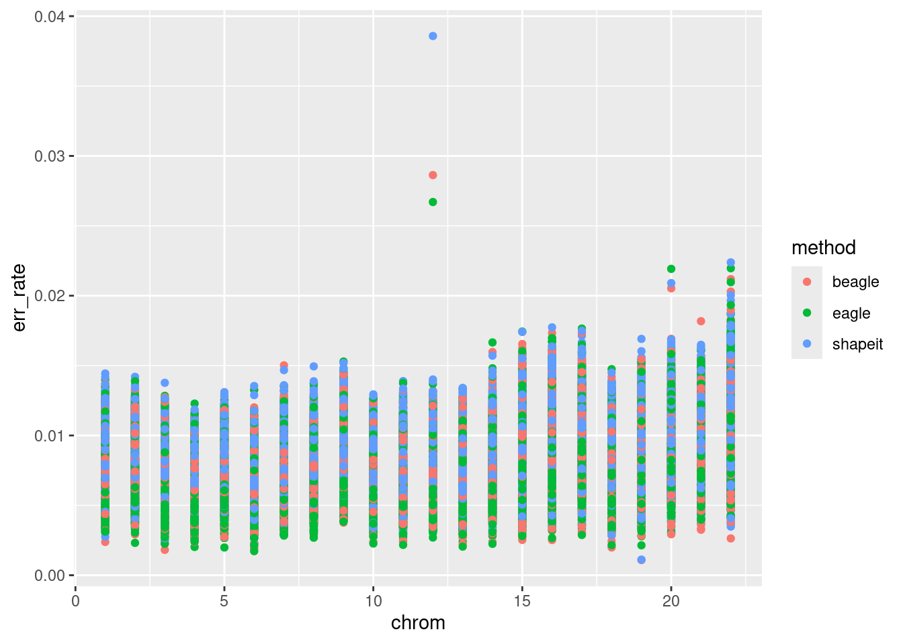
df_errors %>%
mutate(beagle = (n_flip_b + n_switch_b) / n_het,
eagle = (n_flip_e + n_switch_e) / n_het,
shapeit = (n_flip_s + n_switch_s) / n_het) %>%
select(chrom, sample, beagle, eagle, shapeit) %>%
pivot_longer(beagle:shapeit, names_to = "method", values_to = "err_rate") %>%
ggplot(aes(x = factor(chrom), y = err_rate, colour = method)) +
geom_violin()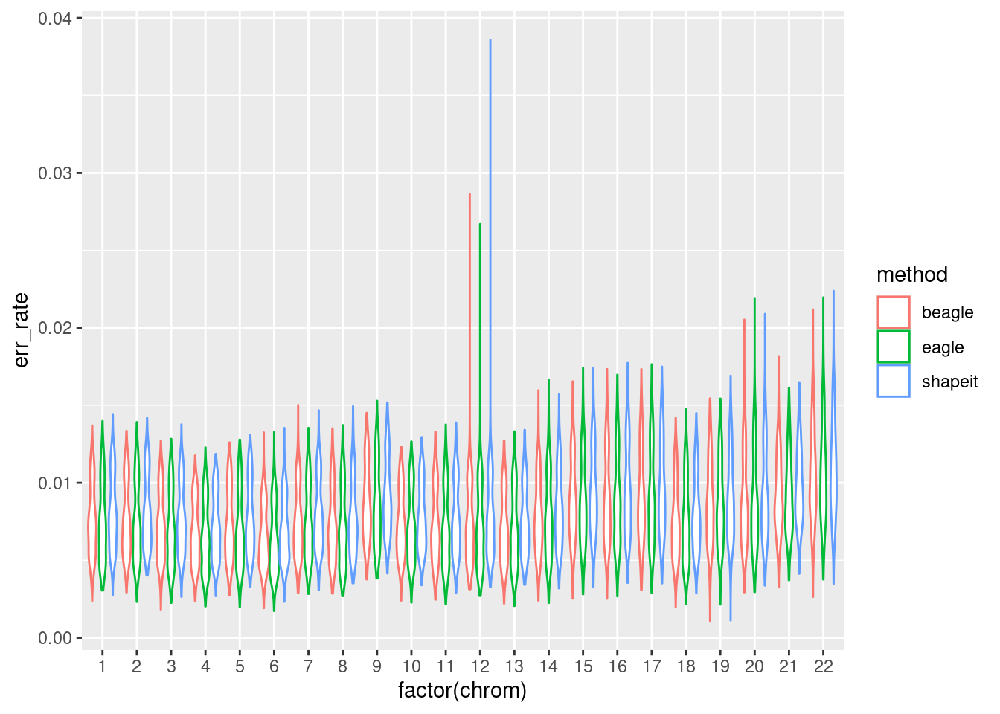
df_errors %>%
left_join(df_subj_rel, by = join_by(sample == id2)) %>%
mutate(beagle = (n_flip_b + n_switch_b) / n_het,
eagle = (n_flip_e + n_switch_e) / n_het,
shapeit = (n_flip_s + n_switch_s) / n_het) %>%
group_by(chrom, SUPER) %>%
summarize(Beagle = mean(beagle),
Eagle = mean(eagle),
SHAPEIT = mean(shapeit)) %>%
pivot_longer(Beagle:SHAPEIT, names_to = "Method", values_to = "err_rate") %>%
ggplot(aes(x = factor(chrom), y = err_rate, colour = SUPER, shape = Method)) +
geom_point()`summarise()` has grouped output by 'chrom'. You can override using the
`.groups` argument.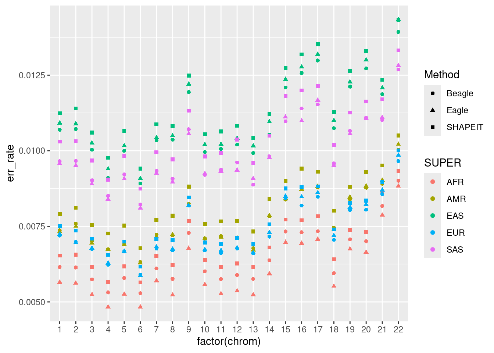
df_errors %>%
left_join(df_subj_rel, by = join_by(sample == id2)) %>%
mutate(beagle = (n_flip_b ) / n_het,
eagle = (n_flip_e ) / n_het,
shapeit = (n_flip_s ) / n_het) %>%
group_by(chrom, SUPER) %>%
summarize(Beagle = mean(beagle),
Eagle = mean(eagle),
SHAPEIT = mean(shapeit)) %>%
pivot_longer(Beagle:SHAPEIT, names_to = "Method", values_to = "err_rate") %>%
ggplot(aes(x = factor(chrom), y = err_rate, colour = SUPER, shape = Method)) +
geom_point() +
ggtitle("Flip Rate")`summarise()` has grouped output by 'chrom'. You can override using the
`.groups` argument.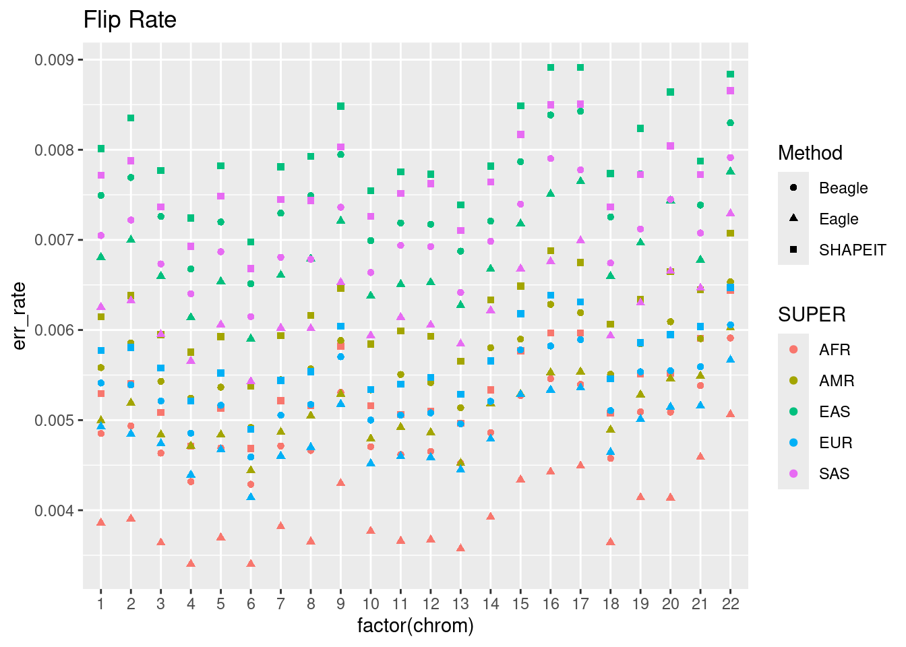
df_errors %>%
left_join(df_subj_rel, by = join_by(sample == id2)) %>%
mutate(beagle = (n_switch_b ) / n_het,
eagle = (n_switch_e ) / n_het,
shapeit = (n_switch_s ) / n_het) %>%
group_by(chrom, SUPER) %>%
summarize(Beagle = mean(beagle),
Eagle = mean(eagle),
SHAPEIT = mean(shapeit)) %>%
pivot_longer(Beagle:SHAPEIT, names_to = "Method", values_to = "err_rate") %>%
ggplot(aes(x = factor(chrom), y = err_rate, colour = SUPER, shape = Method)) +
geom_point() +
ggtitle("Switch Rate")`summarise()` has grouped output by 'chrom'. You can override using the
`.groups` argument.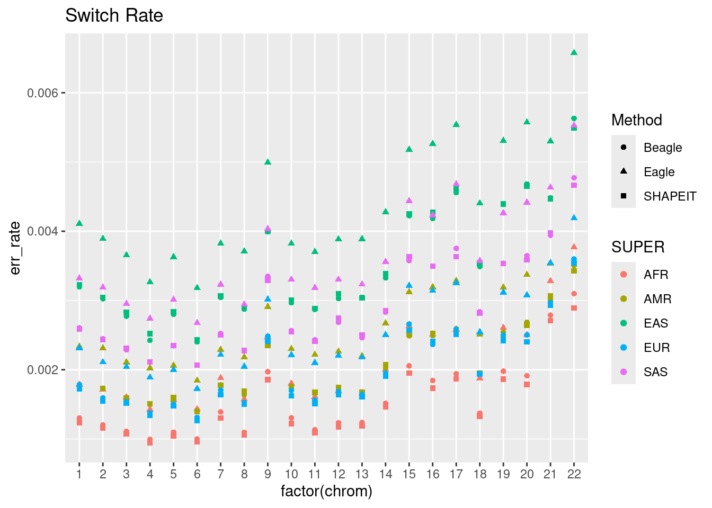
df_errors %>%
left_join(df_subj_rel, by = join_by(sample == id2)) %>%
mutate(beagle = (n_switch_b ) / n_het,
eagle = (n_switch_e ) / n_het,
shapeit = (n_switch_s ) / n_het) %>%
group_by(chrom, SUPER) %>%
summarize(Beagle = mean(beagle),
Eagle = mean(eagle),
SHAPEIT = mean(shapeit)) %>%
pivot_longer(Beagle:SHAPEIT, names_to = "Method", values_to = "err_rate") %>%
filter(SUPER=="AFR") %>%
ggplot(aes(x = factor(chrom), y = err_rate, fill = Method)) +
geom_bar(stat = "identity", position = 'dodge') +
ggtitle("Switch Rate", "AFR") +
theme_bw()`summarise()` has grouped output by 'chrom'. You can override using the
`.groups` argument.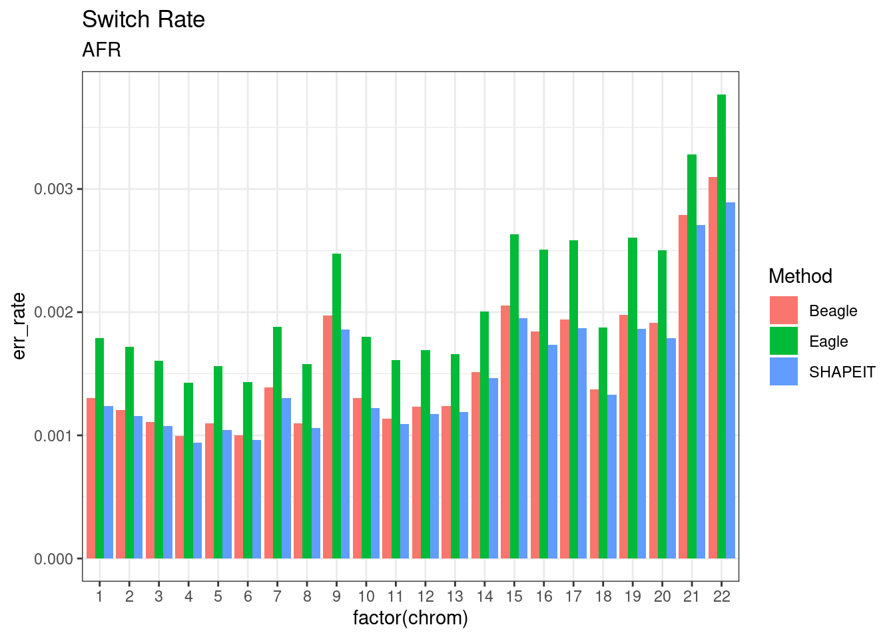
df_errors %>%
filter(chrom == 12) %>%
mutate(beagle = (n_flip_b + n_switch_b) / n_het,
eagle = (n_flip_e + n_switch_e) / n_het,
shapeit = (n_flip_s + n_switch_s) / n_het) %>%
arrange(desc(shapeit)) %>%
head(5) %>%
knitr::kable()| chrom | sample | n_het | n_het_cpg | n_switch_b | n_flip_b | n_switch_cpg_b | n_flip_cpg_b | n_switch_e | n_flip_e | n_switch_cpg_e | n_flip_cpg_e | n_switch_s | n_flip_s | n_switch_cpg_s | n_flip_cpg_s | beagle | eagle | shapeit |
|---|---|---|---|---|---|---|---|---|---|---|---|---|---|---|---|---|---|---|
| 12 | 299 | 45127 | 7135 | 726 | 566 | 126 | 84 | 634 | 571 | 110 | 90 | 975 | 766 | 168 | 126 | 0.0286303 | 0.0267024 | 0.0385800 |
| 12 | 193 | 62904 | 10565 | 258 | 571 | 41 | 98 | 275 | 586 | 53 | 97 | 261 | 620 | 50 | 100 | 0.0131788 | 0.0136875 | 0.0140055 |
| 12 | 595 | 108096 | 17889 | 282 | 1029 | 57 | 170 | 324 | 533 | 76 | 101 | 327 | 1174 | 69 | 201 | 0.0121281 | 0.0079281 | 0.0138858 |
| 12 | 184 | 60200 | 10100 | 255 | 508 | 41 | 92 | 305 | 485 | 66 | 74 | 271 | 524 | 45 | 91 | 0.0126744 | 0.0131229 | 0.0132060 |
| 12 | 240 | 58539 | 9605 | 248 | 485 | 52 | 98 | 264 | 458 | 59 | 107 | 239 | 530 | 43 | 109 | 0.0125216 | 0.0123337 | 0.0131365 |
df_errors %>%
filter(chrom == 12) %>%
left_join(df_subj_rel, by = join_by(sample == id2)) %>%
ggplot(aes(x = SUPER, y = n_het, colour = SUPER)) +
geom_boxplot() +
geom_point(data = {df_errors %>% filter(chrom == 12, sample == 299) %>% left_join(df_subj_rel, by = join_by(sample == id2))}, color = "red")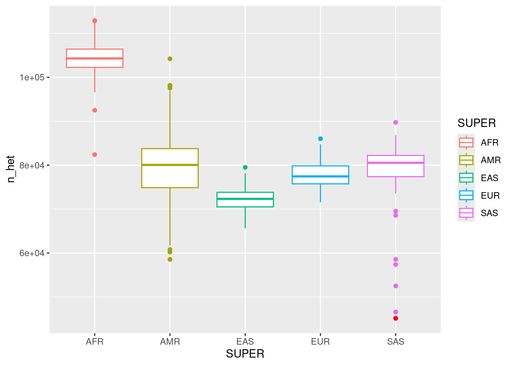
df_errors %>%
left_join(df_subj_rel, by = join_by(sample == id2)) %>%
filter(SUPER=="AFR") %>%
mutate(beagle = (n_flip_b + n_switch_b) / n_het,
eagle = (n_flip_e + n_switch_e) / n_het,
shapeit = (n_flip_s + n_switch_s) / n_het) %>%
select(chrom, sample, beagle, eagle, shapeit) %>%
pivot_longer(beagle:shapeit, names_to = "method", values_to = "err_rate") %>%
ggplot(aes(x = factor(chrom), y = err_rate, colour = method)) +
geom_violin()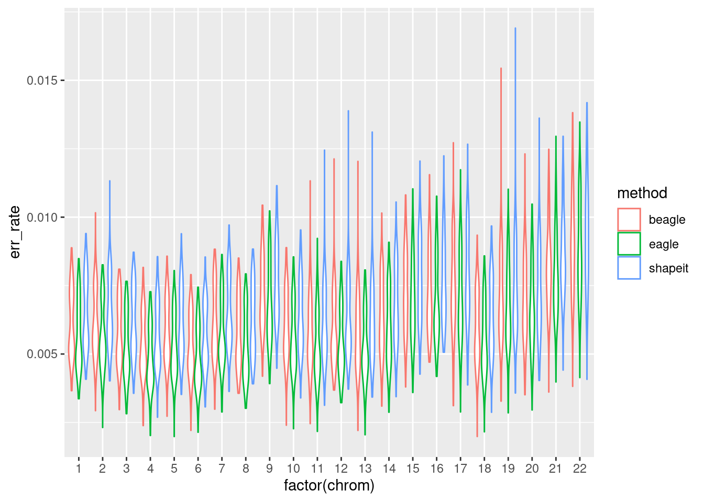
df_errors %>%
left_join(df_subj_rel, by = join_by(sample == id2)) %>%
filter(SUPER=="AMR") %>%
mutate(beagle = (n_flip_b + n_switch_b) / n_het,
eagle = (n_flip_e + n_switch_e) / n_het,
shapeit = (n_flip_s + n_switch_s) / n_het) %>%
select(chrom, sample, beagle, eagle, shapeit) %>%
pivot_longer(beagle:shapeit, names_to = "method", values_to = "err_rate") %>%
ggplot(aes(x = factor(chrom), y = err_rate, colour = method)) +
geom_violin()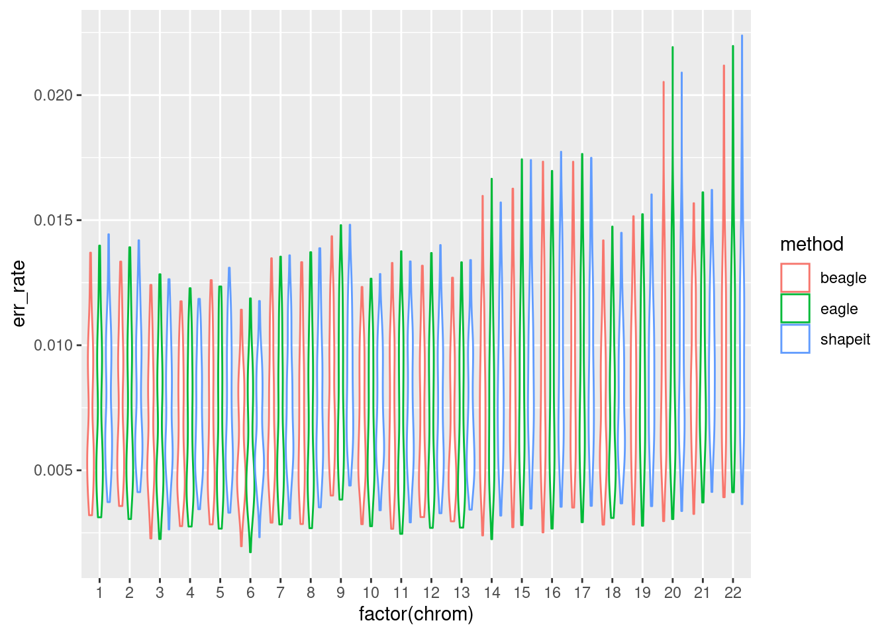
df_errors %>%
left_join(df_subj_rel, by = join_by(sample == id2)) %>%
filter(SUPER=="EAS") %>%
mutate(beagle = (n_flip_b + n_switch_b) / n_het,
eagle = (n_flip_e + n_switch_e) / n_het,
shapeit = (n_flip_s + n_switch_s) / n_het) %>%
select(chrom, sample, beagle, eagle, shapeit) %>%
pivot_longer(beagle:shapeit, names_to = "method", values_to = "err_rate") %>%
ggplot(aes(x = factor(chrom), y = err_rate, colour = method)) +
geom_violin()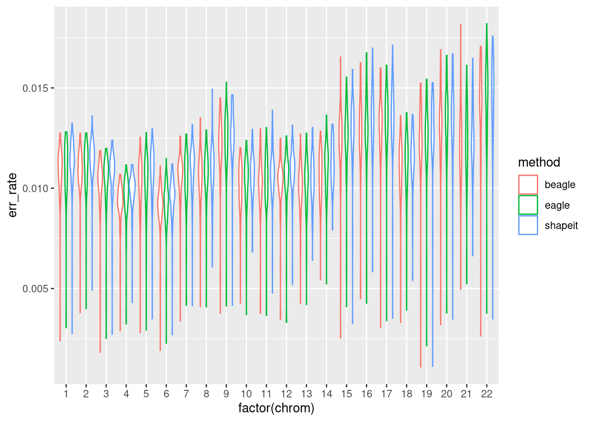
df_errors %>%
left_join(df_subj_rel, by = join_by(sample == id2)) %>%
filter(SUPER=="EUR") %>%
mutate(beagle = (n_flip_b + n_switch_b) / n_het,
eagle = (n_flip_e + n_switch_e) / n_het,
shapeit = (n_flip_s + n_switch_s) / n_het) %>%
select(chrom, sample, beagle, eagle, shapeit) %>%
pivot_longer(beagle:shapeit, names_to = "method", values_to = "err_rate") %>%
ggplot(aes(x = factor(chrom), y = err_rate, colour = method)) +
geom_violin()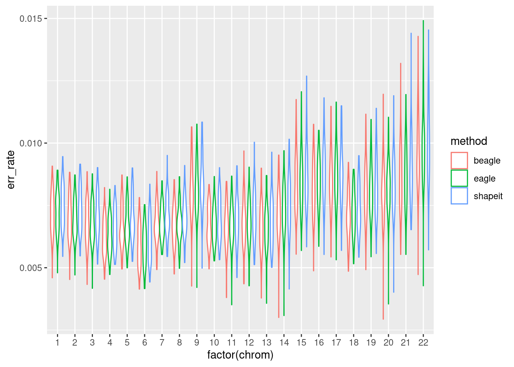
df_errors %>%
left_join(df_subj_rel, by = join_by(sample == id2)) %>%
filter(SUPER=="SAS") %>%
mutate(beagle = (n_flip_b + n_switch_b) / n_het,
eagle = (n_flip_e + n_switch_e) / n_het,
shapeit = (n_flip_s + n_switch_s) / n_het) %>%
select(chrom, sample, beagle, eagle, shapeit) %>%
pivot_longer(beagle:shapeit, names_to = "method", values_to = "err_rate") %>%
ggplot(aes(x = factor(chrom), y = err_rate, colour = method)) +
geom_violin()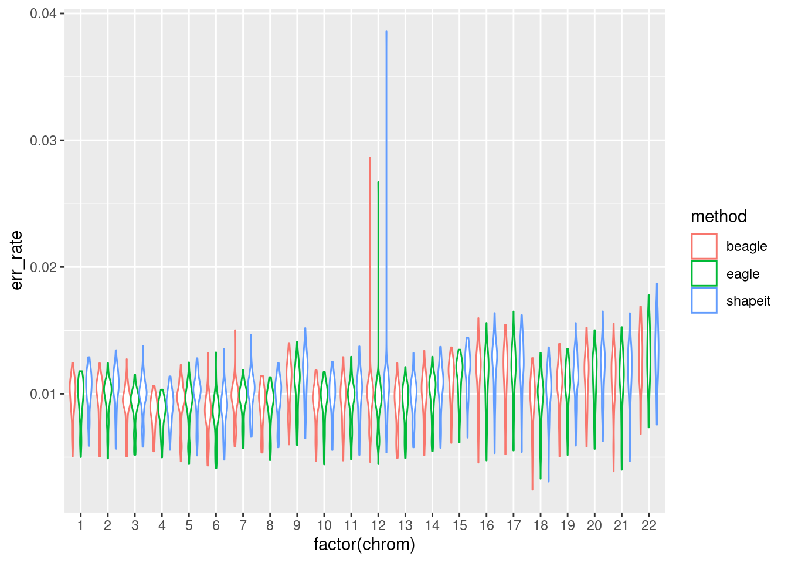
df_errors %>%
left_join(df_subj_rel, by = join_by(sample == id2)) %>%
mutate(beagle = (n_flip_b + n_switch_b) / n_het,
eagle = (n_flip_e + n_switch_e) / n_het,
shapeit = (n_flip_s + n_switch_s) / n_het) %>%
gtsummary::tbl_summary(include = c(beagle, eagle, shapeit),
by = SUPER,
statistic = list(gtsummary::all_continuous() ~ "{mean} ({sd})",
gtsummary::all_categorical() ~ "{n} / {N} ({p})%"))| Characteristic | AFR N = 4,4221 |
AMR N = 3,0141 |
EAS N = 1,5841 |
EUR N = 2,3541 |
SAS N = 1,8701 |
|---|---|---|---|---|---|
| beagle | 0.0065 (0.0017) | 0.0077 (0.0029) | 0.0110 (0.0022) | 0.0073 (0.0014) | 0.0100 (0.0022) |
| eagle | 0.0060 (0.0017) | 0.0077 (0.0031) | 0.0112 (0.0023) | 0.0074 (0.0014) | 0.0099 (0.0022) |
| shapeit | 0.0069 (0.0017) | 0.0083 (0.0028) | 0.0116 (0.0021) | 0.0077 (0.0014) | 0.0106 (0.0022) |
| 1 Mean (SD) | |||||
df_errors %>%
left_join(df_subj_rel, by = join_by(sample == id2)) %>%
mutate(beagle = (n_flip_b + n_switch_b) / n_het,
eagle = (n_flip_e + n_switch_e) / n_het,
shapeit = (n_flip_s + n_switch_s) / n_het) %>%
group_by(chrom, SUPER) %>%
summarize(Beagle = mean(beagle),
Eagle = mean(eagle),
SHAPEIT = mean(shapeit)) %>%
knitr::kable()`summarise()` has grouped output by 'chrom'. You can override using the
`.groups` argument.| chrom | SUPER | Beagle | Eagle | SHAPEIT |
|---|---|---|---|---|
| 1 | AFR | 0.0061541 | 0.0056486 | 0.0065314 |
| 1 | AMR | 0.0073666 | 0.0073292 | 0.0079129 |
| 1 | EAS | 0.0106916 | 0.0109163 | 0.0112412 |
| 1 | EUR | 0.0071962 | 0.0072442 | 0.0075011 |
| 1 | SAS | 0.0096538 | 0.0095749 | 0.0103064 |
| 2 | AFR | 0.0061388 | 0.0056225 | 0.0065608 |
| 2 | AMR | 0.0075898 | 0.0075022 | 0.0081132 |
| 2 | EAS | 0.0107179 | 0.0108905 | 0.0113975 |
| 2 | EUR | 0.0069836 | 0.0069560 | 0.0073585 |
| 2 | SAS | 0.0096647 | 0.0095134 | 0.0103140 |
| 3 | AFR | 0.0057432 | 0.0052412 | 0.0061616 |
| 3 | AMR | 0.0070168 | 0.0069471 | 0.0075380 |
| 3 | EAS | 0.0100329 | 0.0102511 | 0.0106030 |
| 3 | EUR | 0.0067507 | 0.0067821 | 0.0070954 |
| 3 | SAS | 0.0090197 | 0.0089031 | 0.0096771 |
| 4 | AFR | 0.0053117 | 0.0048314 | 0.0056544 |
| 4 | AMR | 0.0067435 | 0.0067364 | 0.0072623 |
| 4 | EAS | 0.0091007 | 0.0094034 | 0.0097654 |
| 4 | EUR | 0.0062322 | 0.0062823 | 0.0065560 |
| 4 | SAS | 0.0085118 | 0.0083951 | 0.0090426 |
| 5 | AFR | 0.0057888 | 0.0052588 | 0.0061717 |
| 5 | AMR | 0.0069223 | 0.0068988 | 0.0075261 |
| 5 | EAS | 0.0099982 | 0.0101669 | 0.0106601 |
| 5 | EUR | 0.0066684 | 0.0066730 | 0.0069973 |
| 5 | SAS | 0.0092144 | 0.0090709 | 0.0098365 |
| 6 | AFR | 0.0052882 | 0.0048326 | 0.0056455 |
| 6 | AMR | 0.0063160 | 0.0062851 | 0.0067728 |
| 6 | EAS | 0.0089145 | 0.0090832 | 0.0094091 |
| 6 | EUR | 0.0059026 | 0.0058674 | 0.0061651 |
| 6 | SAS | 0.0082162 | 0.0081050 | 0.0087478 |
| 7 | AFR | 0.0061038 | 0.0056994 | 0.0065178 |
| 7 | AMR | 0.0072283 | 0.0071565 | 0.0077147 |
| 7 | EAS | 0.0103415 | 0.0104331 | 0.0108755 |
| 7 | EUR | 0.0067620 | 0.0068192 | 0.0070783 |
| 7 | SAS | 0.0093305 | 0.0092548 | 0.0099534 |
| 8 | AFR | 0.0057580 | 0.0052287 | 0.0062152 |
| 8 | AMR | 0.0072094 | 0.0072296 | 0.0078531 |
| 8 | EAS | 0.0103658 | 0.0105017 | 0.0108167 |
| 8 | EUR | 0.0066998 | 0.0067455 | 0.0070381 |
| 8 | SAS | 0.0090675 | 0.0089602 | 0.0097137 |
| 9 | AFR | 0.0072790 | 0.0067742 | 0.0076794 |
| 9 | AMR | 0.0082460 | 0.0081980 | 0.0088147 |
| 9 | EAS | 0.0119425 | 0.0122030 | 0.0124844 |
| 9 | EUR | 0.0081866 | 0.0081938 | 0.0084512 |
| 9 | SAS | 0.0107116 | 0.0105605 | 0.0113243 |
| 10 | AFR | 0.0060101 | 0.0055700 | 0.0063808 |
| 10 | AMR | 0.0070975 | 0.0070947 | 0.0075821 |
| 10 | EAS | 0.0099579 | 0.0102006 | 0.0105497 |
| 10 | EUR | 0.0067013 | 0.0067321 | 0.0069622 |
| 10 | SAS | 0.0092032 | 0.0092410 | 0.0098090 |
| 11 | AFR | 0.0057508 | 0.0052706 | 0.0061522 |
| 11 | AMR | 0.0071722 | 0.0071385 | 0.0076623 |
| 11 | EAS | 0.0100594 | 0.0102104 | 0.0106357 |
| 11 | EUR | 0.0066157 | 0.0066985 | 0.0069070 |
| 11 | SAS | 0.0093714 | 0.0093244 | 0.0099305 |
| 12 | AFR | 0.0058881 | 0.0053664 | 0.0062714 |
| 12 | AMR | 0.0071270 | 0.0071253 | 0.0076752 |
| 12 | EAS | 0.0102030 | 0.0104132 | 0.0108250 |
| 12 | EUR | 0.0067653 | 0.0067907 | 0.0071100 |
| 12 | SAS | 0.0096107 | 0.0093571 | 0.0103676 |
| 13 | AFR | 0.0057598 | 0.0052336 | 0.0061534 |
| 13 | AMR | 0.0067713 | 0.0067205 | 0.0073271 |
| 13 | EAS | 0.0099220 | 0.0101621 | 0.0104243 |
| 13 | EUR | 0.0066041 | 0.0066269 | 0.0069020 |
| 13 | SAS | 0.0088785 | 0.0090787 | 0.0096048 |
| 14 | AFR | 0.0063748 | 0.0059296 | 0.0068014 |
| 14 | AMR | 0.0078321 | 0.0078557 | 0.0084076 |
| 14 | EAS | 0.0105339 | 0.0109551 | 0.0112067 |
| 14 | EUR | 0.0071596 | 0.0072943 | 0.0075659 |
| 14 | SAS | 0.0098157 | 0.0097760 | 0.0104966 |
| 15 | AFR | 0.0073277 | 0.0069690 | 0.0077226 |
| 15 | AMR | 0.0083891 | 0.0084119 | 0.0089976 |
| 15 | EAS | 0.0120937 | 0.0123599 | 0.0127375 |
| 15 | EUR | 0.0084371 | 0.0084965 | 0.0087513 |
| 15 | SAS | 0.0109737 | 0.0111161 | 0.0118033 |
| 16 | AFR | 0.0073035 | 0.0069346 | 0.0077028 |
| 16 | AMR | 0.0087787 | 0.0087222 | 0.0094068 |
| 16 | EAS | 0.0125706 | 0.0127711 | 0.0131870 |
| 16 | EUR | 0.0081882 | 0.0084785 | 0.0087961 |
| 16 | SAS | 0.0113959 | 0.0109937 | 0.0119946 |
| 17 | AFR | 0.0073358 | 0.0070736 | 0.0078345 |
| 17 | AMR | 0.0087838 | 0.0088201 | 0.0093046 |
| 17 | EAS | 0.0129842 | 0.0131864 | 0.0135194 |
| 17 | EUR | 0.0084777 | 0.0086132 | 0.0088212 |
| 17 | SAS | 0.0115283 | 0.0116718 | 0.0121370 |
| 18 | AFR | 0.0059493 | 0.0055207 | 0.0064076 |
| 18 | AMR | 0.0074577 | 0.0074038 | 0.0080159 |
| 18 | EAS | 0.0107453 | 0.0110003 | 0.0112748 |
| 18 | EUR | 0.0070523 | 0.0071887 | 0.0073948 |
| 18 | SAS | 0.0095802 | 0.0095075 | 0.0101851 |
| 19 | AFR | 0.0070700 | 0.0067483 | 0.0073763 |
| 19 | AMR | 0.0083913 | 0.0084724 | 0.0088096 |
| 19 | EAS | 0.0121217 | 0.0122739 | 0.0126333 |
| 19 | EUR | 0.0080380 | 0.0081286 | 0.0082796 |
| 19 | SAS | 0.0106572 | 0.0105645 | 0.0112617 |
| 20 | AFR | 0.0070020 | 0.0066413 | 0.0073049 |
| 20 | AMR | 0.0087767 | 0.0088334 | 0.0092888 |
| 20 | EAS | 0.0127205 | 0.0130084 | 0.0132947 |
| 20 | EUR | 0.0080504 | 0.0082237 | 0.0083524 |
| 20 | SAS | 0.0110950 | 0.0110681 | 0.0116302 |
| 21 | AFR | 0.0081714 | 0.0078706 | 0.0086193 |
| 21 | AMR | 0.0089086 | 0.0090239 | 0.0095120 |
| 21 | EAS | 0.0118682 | 0.0120773 | 0.0123458 |
| 21 | EUR | 0.0085628 | 0.0087016 | 0.0089665 |
| 21 | SAS | 0.0110190 | 0.0110979 | 0.0116987 |
| 22 | AFR | 0.0090094 | 0.0088317 | 0.0093308 |
| 22 | AMR | 0.0100386 | 0.0102130 | 0.0105044 |
| 22 | EAS | 0.0139285 | 0.0143327 | 0.0143294 |
| 22 | EUR | 0.0096566 | 0.0098559 | 0.0100114 |
| 22 | SAS | 0.0126854 | 0.0128169 | 0.0133210 |
df_errors %>%
left_join(df_subj_rel, by = join_by(sample == id2)) %>%
mutate(beagle = (n_switch_b) / n_het,
eagle = (n_switch_e) / n_het,
shapeit = (n_switch_s) / n_het) %>%
gtsummary::tbl_summary(include = c(beagle, eagle, shapeit),
by = SUPER,
statistic = list(gtsummary::all_continuous() ~ "{mean} ({sd})",
gtsummary::all_categorical() ~ "{n} / {N} ({p})%"))| Characteristic | AFR N = 4,4221 |
AMR N = 3,0141 |
EAS N = 1,5841 |
EUR N = 2,3541 |
SAS N = 1,8701 |
|---|---|---|---|---|---|
| beagle | 0.0016 (0.0007) | 0.0021 (0.0012) | 0.0035 (0.0012) | 0.0020 (0.0007) | 0.0029 (0.0010) |
| eagle | 0.0021 (0.0008) | 0.0026 (0.0013) | 0.0044 (0.0012) | 0.0026 (0.0008) | 0.0037 (0.0011) |
| shapeit | 0.0015 (0.0007) | 0.0021 (0.0012) | 0.0035 (0.0011) | 0.0020 (0.0007) | 0.0029 (0.0011) |
| 1 Mean (SD) | |||||
df_errors %>%
left_join(df_subj_rel, by = join_by(sample == id2)) %>%
mutate(beagle = (n_flip_b) / n_het,
eagle = (n_flip_e) / n_het,
shapeit = (n_flip_s) / n_het) %>%
gtsummary::tbl_summary(include = c(beagle, eagle, shapeit),
by = SUPER,
statistic = list(gtsummary::all_continuous() ~ "{mean} ({sd})",
gtsummary::all_categorical() ~ "{n} / {N} ({p})%"))| Characteristic | AFR N = 4,4221 |
AMR N = 3,0141 |
EAS N = 1,5841 |
EUR N = 2,3541 |
SAS N = 1,8701 |
|---|---|---|---|---|---|
| beagle | 0.0049 (0.0011) | 0.0057 (0.0018) | 0.0075 (0.0012) | 0.0053 (0.0008) | 0.0070 (0.0013) |
| eagle | 0.0040 (0.0010) | 0.0051 (0.0019) | 0.0068 (0.0013) | 0.0049 (0.0007) | 0.0063 (0.0013) |
| shapeit | 0.0054 (0.0012) | 0.0062 (0.0017) | 0.0080 (0.0011) | 0.0057 (0.0008) | 0.0077 (0.0013) |
| 1 Mean (SD) | |||||
df_x <- read_csv("output/switch_errors/switch_errors/summary.csv")Rows: 1000 Columns: 45
── Column specification ────────────────────────────────────────────────────────
Delimiter: ","
chr (2): pop, subpop
dbl (43): pair_id, n_switch_eagle, n_switch_beagle, n_switch_shapeit, n_flip...
ℹ Use `spec()` to retrieve the full column specification for this data.
ℹ Specify the column types or set `show_col_types = FALSE` to quiet this message.
sessionInfo()R version 4.5.1 (2025-06-13)
Platform: x86_64-pc-linux-gnu
Running under: Ubuntu 20.04.6 LTS
Matrix products: default
BLAS: /usr/lib/x86_64-linux-gnu/openblas-pthread/libblas.so.3
LAPACK: /usr/lib/x86_64-linux-gnu/openblas-pthread/liblapack.so.3; LAPACK version 3.9.0
locale:
[1] LC_CTYPE=en_US.UTF-8 LC_NUMERIC=C
[3] LC_TIME=en_US.UTF-8 LC_COLLATE=en_US.UTF-8
[5] LC_MONETARY=en_US.UTF-8 LC_MESSAGES=en_US.UTF-8
[7] LC_PAPER=en_US.UTF-8 LC_NAME=C
[9] LC_ADDRESS=C LC_TELEPHONE=C
[11] LC_MEASUREMENT=en_US.UTF-8 LC_IDENTIFICATION=C
time zone: America/New_York
tzcode source: system (glibc)
attached base packages:
[1] stats graphics grDevices utils datasets methods base
other attached packages:
[1] gtsummary_2.1.0 janitor_2.2.1 conflicted_1.2.0 lubridate_1.9.4
[5] forcats_1.0.0 stringr_1.5.1 dplyr_1.1.4 purrr_1.0.4
[9] readr_2.1.5 tidyr_1.3.1 tibble_3.2.1 ggplot2_3.5.2
[13] tidyverse_2.0.0 workflowr_1.7.1
loaded via a namespace (and not attached):
[1] gtable_0.3.6 xfun_0.52 bslib_0.9.0 processx_3.8.6
[5] callr_3.7.6 tzdb_0.5.0 vctrs_0.6.5 tools_4.5.1
[9] ps_1.9.0 generics_0.1.3 parallel_4.5.1 pkgconfig_2.0.3
[13] gt_0.11.1 lifecycle_1.0.4 farver_2.1.2 compiler_4.5.1
[17] git2r_0.33.0 munsell_0.5.1 getPass_0.2-4 snakecase_0.11.1
[21] litedown_0.7 httpuv_1.6.15 htmltools_0.5.8.1 sass_0.4.10
[25] yaml_2.3.10 later_1.4.1 pillar_1.10.1 crayon_1.5.3
[29] jquerylib_0.1.4 whisker_0.4.1 cachem_1.1.0 commonmark_1.9.5
[33] tidyselect_1.2.1 digest_0.6.37 stringi_1.8.4 labeling_0.4.3
[37] rprojroot_2.0.4 fastmap_1.2.0 grid_4.5.1 archive_1.1.12
[41] colorspace_2.1-1 cli_3.6.4 magrittr_2.0.3 cards_0.5.1
[45] withr_3.0.2 scales_1.3.0 promises_1.3.2 bit64_4.6.0-1
[49] timechange_0.3.0 rmarkdown_2.29 httr_1.4.7 bit_4.6.0
[53] hms_1.1.3 memoise_2.0.1 evaluate_1.0.3 knitr_1.50
[57] markdown_2.0 rlang_1.1.5 Rcpp_1.0.14 glue_1.8.0
[61] xml2_1.3.8 rstudioapi_0.17.1 vroom_1.6.5 jsonlite_1.9.1
[65] R6_2.6.1 fs_1.6.5